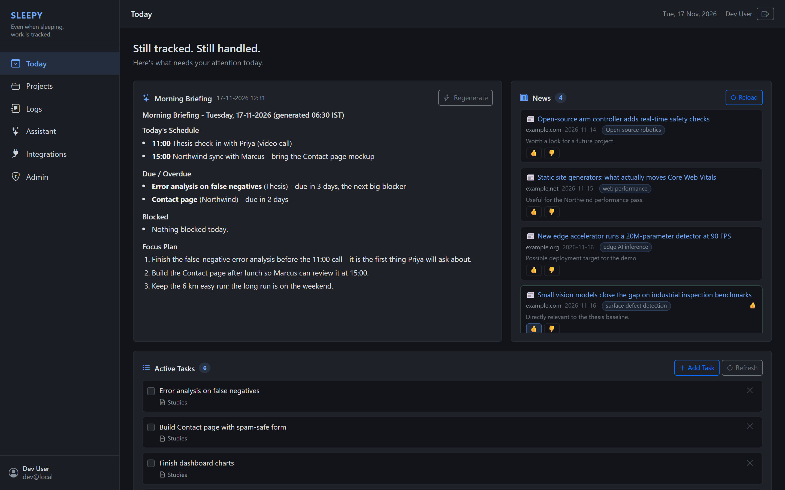
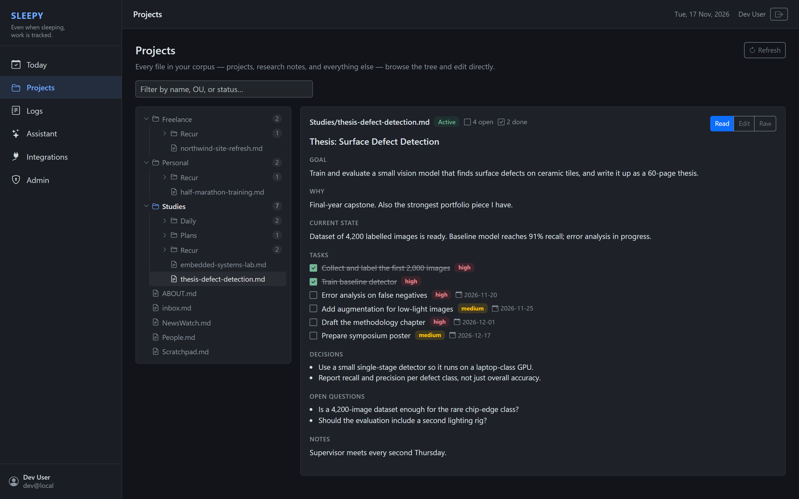
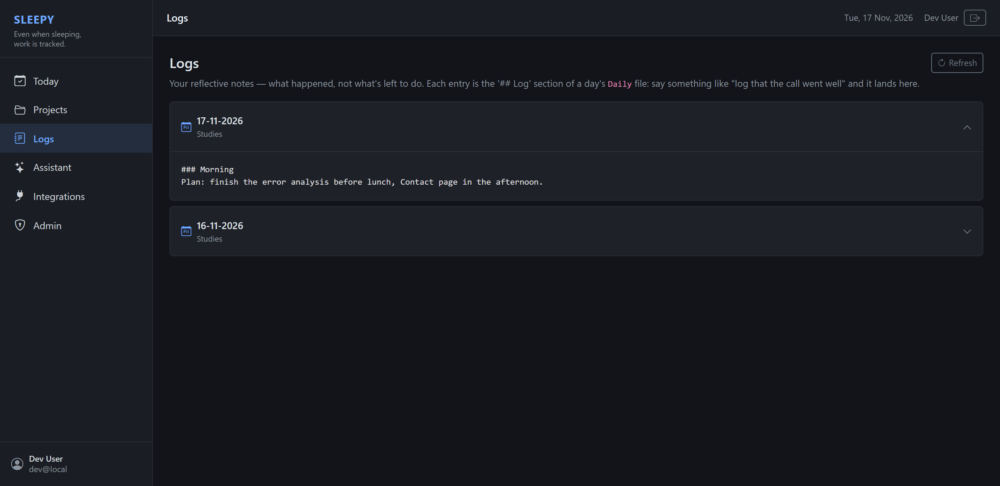
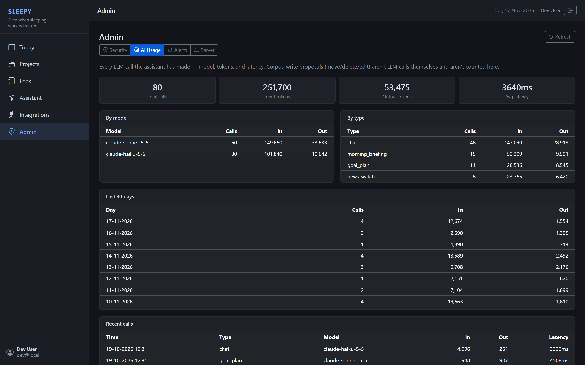

Personal software · self-hosted · May–Nov 2026
SLEEPY: a self-hosted AI project assistant
Even when sleeping, work is tracked and handled.
A self-hosted AI project assistant for one person. Plain Markdown files in Git hold every project, plan and daily log. The assistant reads them, says why each of today's tasks matters, and edits the files only after you approve the change. A background worker does the rest overnight.
What it does
Six things, one person
It is not another task manager. It sits on top of the Markdown notes I already keep and adds context, planning and a night shift.
- Today
- The day's task list, built from each life area's daily file, with a one-line "why it matters" pulled from the project it belongs to. Tick, capture or promote a task from the page.
- Assistant
- A chat with Claude that searches the notes (ChromaDB vector search over the Markdown) and answers about projects, drafts emails and messages, and proposes file edits.
- Safe edits
- The model never writes files. It returns a SEARCH/REPLACE block; the backend checks it, shows the diff, and commits only after I confirm. See the demo below.
- Night shift
- A separate worker process seeds tomorrow's daily files, re-indexes the notes, backs up and copies everything offsite, and emails a morning briefing at 06:30.
- News watch
- Each project can list news topics. At midnight they go out as one batch request to the Anthropic Batches API; new articles land in the inbox file by morning.
- Connector
- A narrow MCP endpoint so the Claude phone app can read today's list and add or tick tasks. Five tools, OAuth 2.1, nothing else reachable.
The real app
What it looks like
Screenshots of the running app, taken against a made-up demo corpus (a fictional student and freelancer). None of my own notes or plans appear. Click an image for full size.








How it is built
Markdown is the truth, everything else is rebuildable
Two Python processes share three stores. The web process answers requests; the worker owns every scheduled and queued job, so a slow job never blocks the page.
python main.py starts Flask, the Vite dev server and the worker together.| Layer | Holds | If it is lost |
|---|---|---|
| Markdown + Git | Projects, plans, daily and weekly logs, people, inbox. One folder per life area. | The only thing that matters. Pushed offsite every night. |
| ChromaDB | Chunks of the Markdown, embedded for search. | Rebuilt by re-indexing. Self-check notices an empty index and queues it. |
| SQLite | Job queue, every AI event (append-only), login attempts, alerts, host metrics. | Restored from the nightly backup, gzipped and copied offsite. |
The night shift
What runs while I sleep
The name is the point: the jobs are timed so that by the time I wake up, today's file exists, the search index is fresh, the backups are offsite and the briefing is in my email. Times are IST. Select a job.
Shaded: 22:00 to 06:30, while I am asleep
Safe AI edits
The model proposes, I approve, Git remembers
Language models are bad at unified diffs (line counts drift by one), so the assistant answers with a SEARCH/REPLACE block instead. The backend runs it through the same checks every time. Pick a case to see where it stops. The file and text are made up for this demo.
What the model sent
What the file looks like now
Several blocks in one answer apply together or not at all. Every proposal, accepted or not, is a row in an append-only audit table; rows are voided, never deleted. Commits use their own author, sleepy, so the history shows which lines the assistant wrote.
Self-healing
Most failures fix themselves
After the first weeks live, I wrote down every way it had broken and made each one recover on its own, or send an email when a fix needs a decision. From the project's recovery runbook:
| Failure | What happens |
|---|---|
| A background job raises | Retried with backoff (30 s × 2ⁿ), then an alert email, then one automatic requeue if the job is safe to repeat. |
| Worker killed mid-job | The job's lock expires after 30 minutes and another run picks it up. A half-written handler is rolled back first. |
| Box was off at midnight | Today's file is created at worker start-up, or by the next self-check. |
| 06:30 briefing missed | Generated on the first page load that day. |
Stale .git/index.lock | Cleared at start-up and every 15 minutes. |
| Search index empty | Re-index queued automatically. |
| Disk nearly full, database corrupt | Not automatic, on purpose: an email with what to check, and a runbook section to follow. |
Security
Treat everything the model reads as hostile
The assistant reads web news and can trigger actions, so prompt injection is the main threat, not just passwords. Two full code reviews (July and September 2026) shaped these rules.
- Every write goes through one gate. Chat edits wait for my confirmation; quick actions (tick, capture) use the same validated path. No route writes files directly.
- Outside text is labelled untrusted before it reaches the model: news, notes text handed to the connector, anything the model did not write.
- The connector is a front door, not a copy of the app. Five to-do tools, scoped tokens, PKCE, single-use codes, rotating refresh tokens, only SHA-256 hashes stored, 60 writes an hour. No tool reads files or searches notes, and a test fails if one is ever added.
- Login is in-app and boring. Hashed passwords, 20-minute tokens renewed while active, sign-out after 15 idle minutes, lock-out after 5 failed tries in 15 minutes, every attempt logged with location.
- No secrets in the notes. Added lines are scanned for API keys and private keys before any commit.
- A local attack sandbox boots the app in production settings against throwaway notes and re-runs every attack found so far: HTTP, AI tools, rendering, and 140 connector checks. Its exit code is the number of vulnerabilities.
- Nothing reaches production untested. Changes go
main→canary(CI runs the tests and the frontend build) →prod, which only CI can move.
How it got here
Six months, one big push
Most of the work happened in September, when it moved from my laptop to a real server and every gap between the two showed up at once.
- First commit. Plan: a Proxmox VM with Keycloak sign-in.
- Today view, assistant, safe edits, worker and job queue.
- Integrations cut to email only. Telegram, WhatsApp and Jira were built, then removed: I did not use them.
- First full security review; notes reorganised by life area.
- Live on AWS EC2. Keycloak dropped for in-app login.
- Alert emails, offsite backups, self-healing, recovery runbook.
- Canary branch and CI gate in front of production.
- MCP connector built in four phases and deployed.
Honest limits
What this page does not show
The screenshots use a made-up corpus, since the real screens show my own notes and plans. The layout and behaviour are the real app.
Built for one person with two fixed accounts. Multi-user was out of scope from day one.
The MCP endpoint is deployed but not yet added to the Claude app.
Proxmox, Keycloak and three chat integrations were planned or built and then dropped. The docs record why.